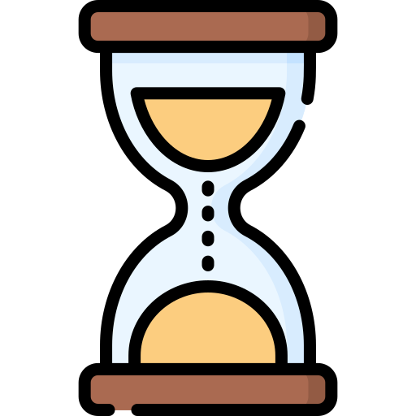

Mon profil
Je suis actuellement en deuxième année de BUT informatique à l'Université de Lille, Villeneuve-d'Ascq. J’étudie la conception d’applications full-stack ainsi que la gestion de projet en équipe.


Patient
Lorsque qu’un problème survient, je sais faire preuve de calme et de patience afin de le résoudre.
Curieux
Ma volonté de toujours en apprendre davantage me permet d’élargir mes connaissances.

Passionné
Pour être motivé, il faut avant tous être passionné. Ainsi, cela me permet de prendre du plaisir à travailler.

Autonome
Je suis capable d’observer et de me documenter afin de mener à bien mon travail.